准备工作
系统配置
-
在虚拟机中安装Linux系统，本项目采用
VMware Workstation 16.1.2和Ubuntu 18.04，本机系统为Win 10 -
更新
Ubuntu 18.04源并安装open-vm-tools -
进入
/etc/apt/sources.list修改为国内镜像源（速度快），全部删除，替换为下述内容，如果更新报错，将https换成http```shell # 默认注释了源码镜像以提高 apt update 速度，如有需要可自行取消注释 deb https://mirrors.tuna.tsinghua.edu.cn/ubuntu/ bionic main restricted universe multiverse # deb-src https://mirrors.tuna.tsinghua.edu.cn/ubuntu/ bionic main restricted universe multiverse deb https://mirrors.tuna.tsinghua.edu.cn/ubuntu/ bionic-updates main restricted universe multiverse # deb-src https://mirrors.tuna.tsinghua.edu.cn/ubuntu/ bionic-updates main restricted universe multiverse deb https://mirrors.tuna.tsinghua.edu.cn/ubuntu/ bionic-backports main restricted universe multiverse # deb-src https://mirrors.tuna.tsinghua.edu.cn/ubuntu/ bionic-backports main restricted universe multiverse deb https://mirrors.tuna.tsinghua.edu.cn/ubuntu/ bionic-security main restricted universe multiverse # deb-src https://mirrors.tuna.tsinghua.edu.cn/ubuntu/ bionic-security main restricted universe multiverse
# 预发布软件源，不建议启用 # deb https://mirrors.tuna.tsinghua.edu.cn/ubuntu/ bionic-proposed main restricted universe multiverse # deb-src https://mirrors.tuna.tsinghua.edu.cn/ubuntu/ bionic-proposed main restricted universe multiverse ```
-
更新系统源：
shell # update 是同步 /etc/apt/sources.list 和 /etc/apt/sources.list.d 中列出的源的索引，这样才能获取到最新的软件包 sudo apt update # upgrade 是升级已安装的所有软件包(可选) # sudo apt upgrade -
安装
open-vm-tools：sudo apt install open-vm-tools -
~~如果要实现文件夹共享，需要安装
open-vm-tools-dkms：sudo apt install open-vm-tools-dkms~~=>清华源找不到open-vm-tools-dkms，不安装不影响 -
桌面环境还需要安装
open-vm-tools-desktop以支持双向拖放文件：sudo apt install open-vm-tools-desktop -
重启（使用
VMware自带重启，使用reboot重启可能失败）后成功进行拖拽复制
注：参考链接
- 在
Ubuntu 18.10安装必要组件
```shell # 安装Vim环境 sudo apt install vim
# 用于远程连接虚拟机 sudo apt install openssh-server
# 用于查看IP地址 sudo apt install net-tools
# 树形查看文件夹内容 sudo apt install tree ```
VS code
-
安装
Remote Development插件 -
在Linux中使用
ifconfig查看ip地址 -
按下图步骤设置
config文件
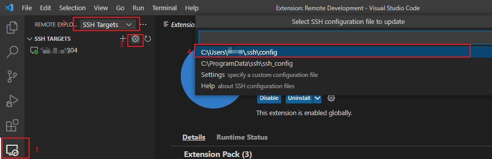
config内容如下
shell
# Read more about SSH config files: https://linux.die.net/man/5/ssh_config
Host 自定义名称
HostName 远程服务器IP
User 远程服务器用户名
GCC
说明
本部分笔记及源码出自slide/01Linux系统编程入门/01 GCC
安装gcc
命令：sudo apt install gcc g++，本项目安装版本为：7.5.0
gcc工作流程
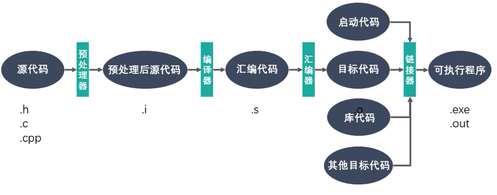
gcc常用参数选项
-
-D实例 -
源程序
```c
include
int main() {
if DEBUG
printf("Debug\n");endif
printf("hello, world\n"); return 0;} ```
-
编译命令1：
```shell gcc test.c -o test ./test
输出
hello, world ```
-
编译命令2：
```shell gcc test.c -o test -D DEBUG ./test
输出
Debug hello, world ```
gcc与g++区别
gcc和g++都是GNU(组织)的一个编译器- 误区一：
gcc只能编译 c 代码，g++ 只能编译 c++ 代码 - 后缀为
.c的，gcc把它当作是 C 程序，而g++当作是c++程序 - 后缀为
.cpp的，两者都会认为是C++程序，C++的语法规则更加严谨一些 - 编译阶段，
g++会调用gcc，对于C++代码，两者是等价的，但是因为gcc命令不能自动和C++程序使用的库联接，所以通常用g++来完成链接，为了统一起见，干脆编译/链接统统用g++了，这就给人一种错觉，好像cpp程序只能用g++似的 - 误区二：
gcc不会定义__cplusplus宏，而g++会 - 实际上，这个宏只是标志着编译器将会把代码按 C 还是 C++ 语法来解释
- 如上所述，如果后缀为
.c，并且采用gcc编译器，则该宏就是未定义的，否则，就是已定义 - 误区三：编译只能用
gcc，链接只能用g++ - 严格来说，这句话不算错误，但是它混淆了概念，应该这样说：编译可以用
gcc/g++，而链接可以用g++或者gcc -lstdc++ gcc命令不能自动和C++程序使用的库联接，所以通常使用g++来完成链接。但在编译阶段，g++会自动调用gcc，二者等价
Linux系统编程基础知识
静态库与动态库
说明
本部分笔记及源码出自slide/01Linux系统编程入门/02 静态库与动态库
库
- 库文件是计算机上的一类文件，可以简单的把库文件看成一种代码仓库，它提供给使用者一些可以直接拿来用的变量、函数或类
- 库是特殊的一种程序，编写库的程序和编写一般的程序区别不大，只是库不能单独运行
- 库文件有两种，
静态库和动态库（共享库）。区别是： - 静态库在程序的链接阶段被复制到了程序中
- 动态库在链接阶段没有被复制到程序中，而是程序在运行时由系统动态加载到内存中供程序调用
- 库的好处：代码保密 和方便部署和分发
静态库的制作
- 规则
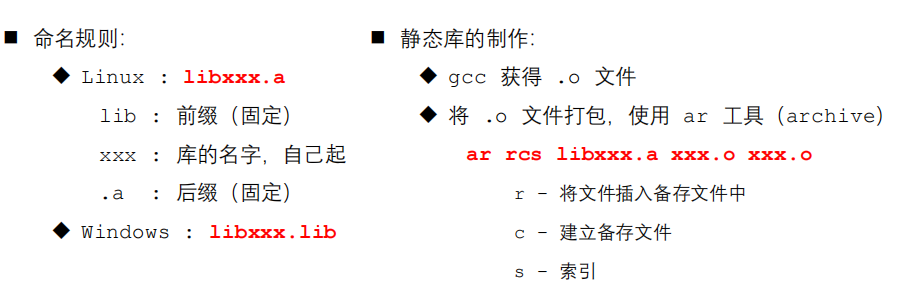
- 示例：有如下图所示文件(其中每个分文件用于实现四则运算)，将其打包为静态库
-
生成
.o文件：gcc -c 文件名 -
将
.o文件打包：ar rcs libxxx.a xx1.o xx2.o
静态库的使用
- 需要提供静态库文件和相应的头文件，有如下结构文件，其中
main.c测试文件
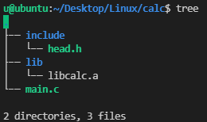
```c
// main.c
#include
int main() { int a = 20; int b = 12; printf("a = %d, b = %d\n", a, b); printf("a + b = %d\n", add(a, b)); printf("a - b = %d\n", subtract(a, b)); printf("a * b = %d\n", multiply(a, b)); printf("a / b = %f\n", divide(a, b)); return 0; } ```
-
编译运行：
gcc main.c -o app -I ./include -l calc -L ./lib -
-I ./include：指定头文件目录，如果不指定，出现以下错误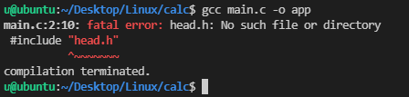
-
-l calc：指定静态库名称，如果不指定，出现以下错误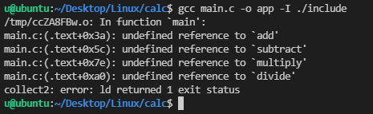
-
-L ./lib：指定静态库位置，如果不指定，出现以下错误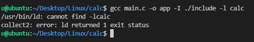
-
正确执行（成功生成
app可执行文件）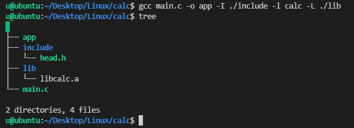
-
测试程序
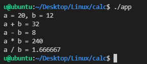
动态库的制作
- 规则
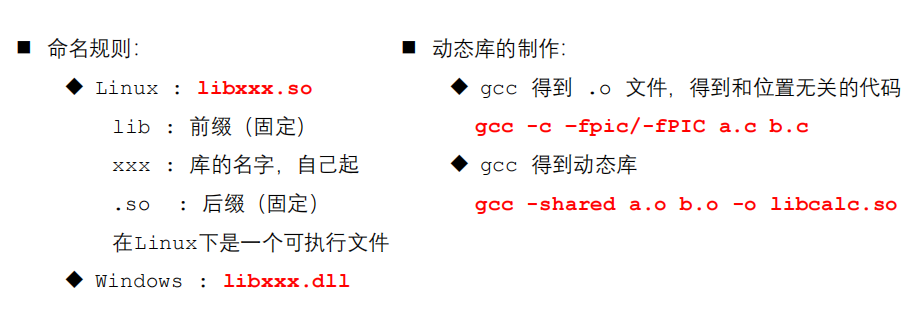
- 示例：有如下图所示文件(其中每个分文件用于实现四则运算)，将其打包为动态库
-
生成
.o文件：gcc -c -fpic 文件名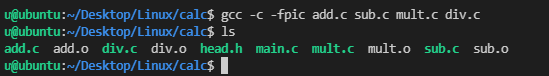
-
将
.o文件打包：gcc -shared xx1.o xx2.o -o libxxx.so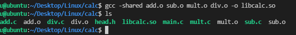
动态库的使用
-
需要提供动态库文件和相应的头文件
-
定位动态库（原因见工作原理->如何定位共享库文件，其中路径为动态库所在位置）
-
方法一：修改环境变量，当前终端生效，退出当前终端失效
shell export LD_LIBRARY_PATH=$LD_LIBRARY_PATH:/home/u/Desktop/Linux/calc/lib -
方法二：修改环境变量，用户级别永久配置
```shell
修改~/.bashrc
vim ~/.bashrc
在~/.bashrc中添加下行，保存退出
export LD_LIBRARY_PATH=$LD_LIBRARY_PATH:/home/u/Desktop/Linux/calc/lib
使修改生效
source ~/.bashrc ```
-
方法三：修改环境变量，系统级别永久配置
```shell
修改/etc/profile
sudo vim /etc/profile
在~/.bashrc中添加下行，保存退出
export LD_LIBRARY_PATH=$LD_LIBRARY_PATH:/home/u/Desktop/Linux/calc/lib
使修改生效
source /etc/profile ```
-
方法四：修改
/etc/ld.so.cache文件列表```shell
修改/etc/ld.so.conf
sudo vim /etc/ld.so.conf
在/etc/ld.so.conf中添加下行，保存退出
/home/u/Desktop/Linux/calc/lib
更新配置
sudo ldconfig ```
-
有如下结构文件，其中
main.c测试文件
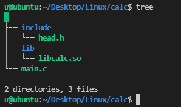
- 编译运行：
gcc main.c -o app -I ./include -l calc -L ./lib
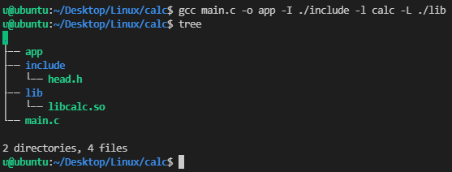
- 测试程序
- 如果不将动态库文件绝对路径加入环境变量，则会出现以下错误
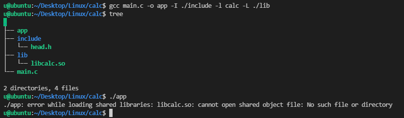
工作原理
-
静态库：
GCC进行链接时，会把静态库中代码打包到可执行程序中 -
动态库：
GCC进行链接时，动态库的代码不会被打包到可执行程序中 -
程序启动之后，动态库会被动态加载到内存中，通过
ldd （list dynamic dependencies）命令检查动态库依赖关系
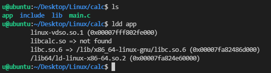
-
如何定位共享库文件呢？
-
当系统加载可执行代码时候，能够知道其所依赖的库的名字，但是还需要知道绝对路径。此时就需要系统的动态载入器来获取该绝对路径
- 对于
elf格式的可执行程序，是由ld-linux.so来完成的，它先后搜索elf文件的DT_RPATH段 =>环境变量LD_LIBRARY_PATH=>/etc/ld.so.cache文件列表=>/lib/，usr/lib目录找到库文件后将其载入内存
静态库和动态库的对比
程序编译成可执行程序的过程
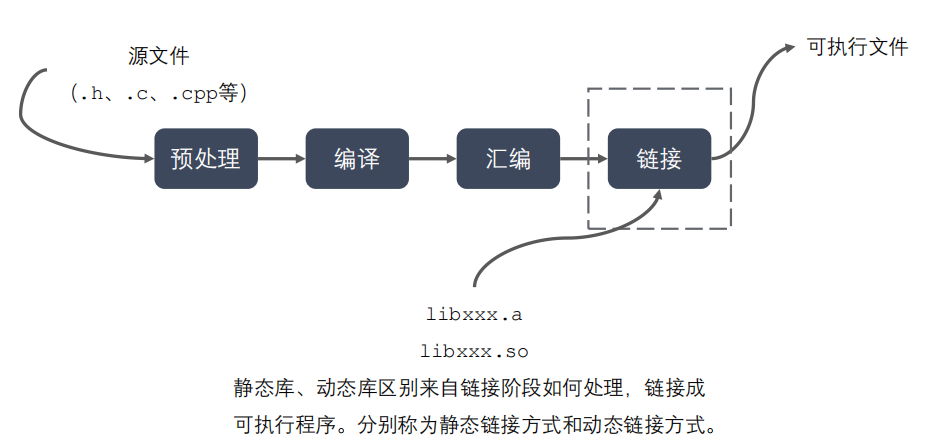
静态库制作过程
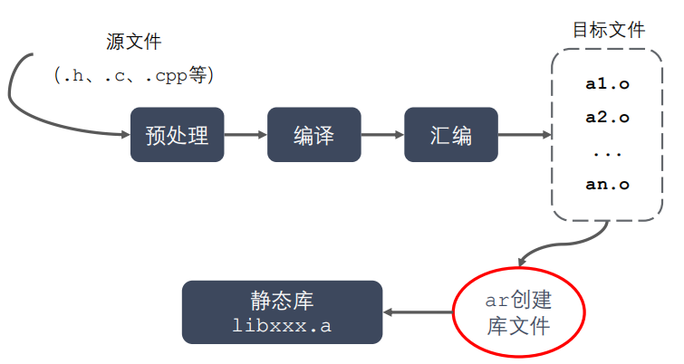
动态库制作过程
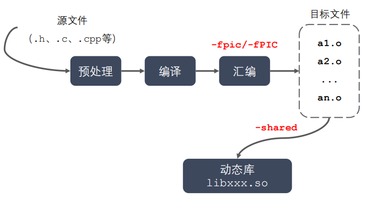
静态库的优缺点
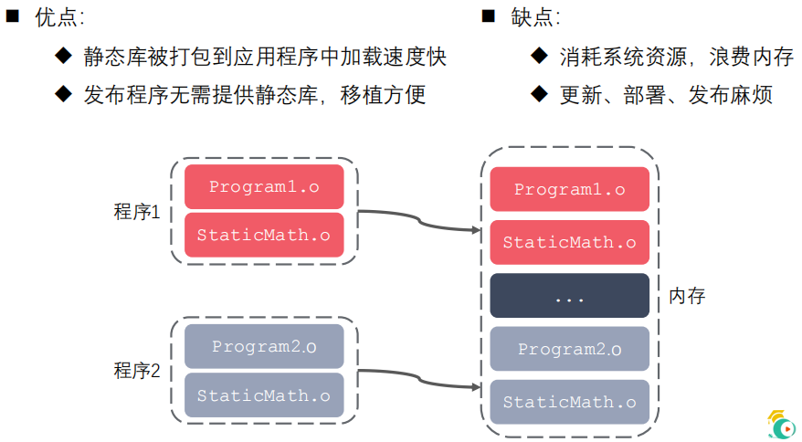
动态库的优缺点
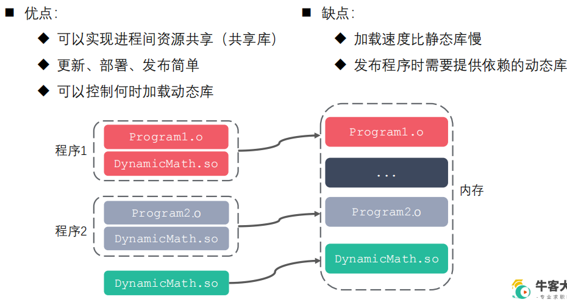
Makefile
说明
本部分笔记及源码出自slide/01Linux系统编程入门/03 Makefile
概念及安装
- 一个工程中的源文件不计其数，其按类型、功能、模块分别放在若干个目录中，
Makefile文件定义了一系列的规则来指定哪些文件需要先编译，哪些文件需要后编译，哪些文件需要重新编译，甚至于进行更复杂的功能操作，因为Makefile文件就像一个Shell脚本一样，也可以执行操作系统的命令 Makefile带来的好处就是“自动化编译” ，一旦写好，只需要一个make命令，整个工程完全自动编译，极大的提高了软件开发的效率。make是一个命令工具，是一个解释Makefile文件中指令的命令工具，一般来说，大多数的IDE都有这个命令，比如 Delphi 的make，Visual C++ 的nmake，Linux 下 GNU 的make- 安装：
sudo apt install make，安装时会安装man 手册
Makefile 文件命名和规则
-
文件命名：
makefile或者Makefile -
Makefile规则 -
一个
Makefile文件中可以有一个或者多个规则- 目标：最终要生成的文件（伪目标除外）
- 依赖：生成目标所需要的文件或是目标
- 命令：通过执行命令对依赖操作生成目标（命令前必须 Tab 缩进）
-
Makefile中的其它规则一般都是为第一条规则服务的。
Makefile编写方式
说明
假设有如下文件
方式一：Makefile+直接编译链接（不推荐）
app:add.c div.c multi.c sub.c main.c
gcc add.c div.c multi.c sub.c main.c -o app
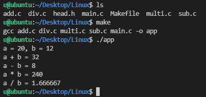
方式二：Makefile+编译+链接
app:add.o div.o multi.o sub.o main.o
gcc add.o div.o multi.o sub.o main.o -o app
add.o:add.c
gcc -c add.c -o add.o
div.o:div.c
gcc -c div.c -o div.o
multi.o:multi.c
gcc -c multi.c -o multi.o
sub.o:sub.c
gcc -c sub.c -o sub.o
main.o:main.c
gcc -c main.c -o main.o
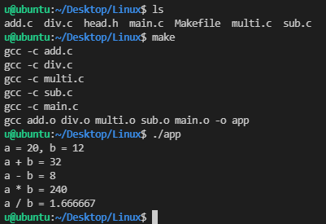
方式三：Makefile+变量
知识点
-
自定义变量：
变量名=变量值，如var=hello -
预定义变量
-
AR: 归档维护程序的名称，默认值为 ar -
CC: C 编译器的名称，默认值为 cc -
CXX: C++ 编译器的名称，默认值为 g++ -
$@: 目标的完整名称 -
$<: 第一个依赖文件的名称 -
$^: 所有的依赖文件 -
示例
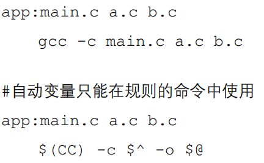
-
获取变量的值：
$(变量名)，如$(var)
示例
src=add.o div.o multi.o sub.o main.o
target=app
$(target):$(src)
$(CC) $^ -o $@
add.o:add.c
$(CC) -c $^ -o $@
div.o:div.c
$(CC) -c $^ -o $@
multi.o:multi.c
$(CC) -c $^ -o $@
sub.o:sub.c
$(CC) -c $^ -o $@
main.o:main.c
$(CC) -c $^ -o $@
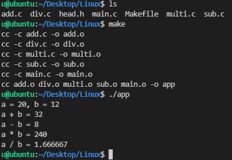
方式四：Makefile+模式匹配
知识点
当所要编译的文件过多时，使用模式匹配能够简化操作
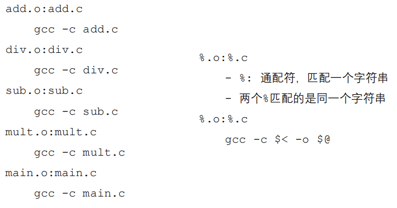
示例
src=add.o div.o multi.o sub.o main.o
target=app
$(target):$(src)
$(CC) $^ -o $@
%.o:%.c
$(CC) -c $< -o $@
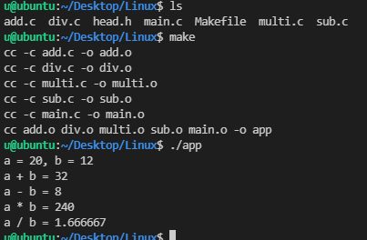
方法五：Makefile + 函数
知识点
-
$(wildcard PATTERN...) -
功能：获取指定目录下指定类型的文件列表
-
参数：PATTERN 指的是某个或多个目录下的对应的某种类型的文件，如果有多个目录，一般使用空格间隔
-
返回：得到的若干个文件的文件列表，文件名之间使用空格间隔
-
示例
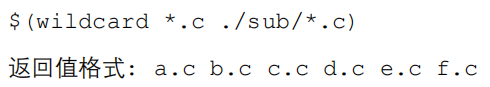
-
$(patsubst <pattern>,<replacement>,<text>) -
功能：查找
<text>中的单词(单词以“空格”、“Tab”或“回车”“换行”分隔)是否符合模式<pattern>，如果匹配的话，则以<replacement>替换 -
<pattern>可以包括通配符%，表示任意长度的字串。如果<replacement>中也包含%，那么，<replacement>中的这个%将是<pattern>中的那个%所代表的字串。(可以用\来转义，以\%来表示真实含义的%字符) -
返回：函数返回被替换过后的字符串
-
示例
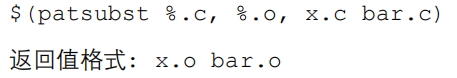
示例
src=$(wildcard ./*.c)
objs=$(patsubst %.c, %.o, $(src))
target=app
$(target):$(objs)
$(CC) $^ -o $@
%.o:%.c
$(CC) -c $< -o $@
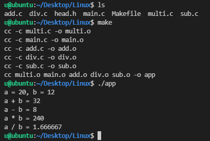
清除中间文件
src=$(wildcard ./*.c)
objs=$(patsubst %.c, %.o, $(src))
target=app
$(target):$(objs)
$(CC) $^ -o $@
%.o:%.c
$(CC) -c $< -o $@
clean:
rm *.o
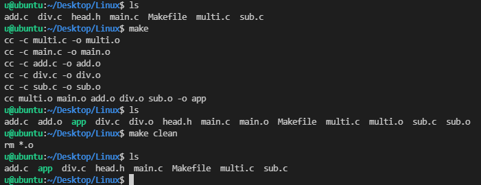
工作原理
- 命令在执行之前，需要先检查规则中的依赖是否存在
- 如果存在，执行命令
- 如果不存在，向下检查其它的规则，检查有没有一个规则是用来生成这个依赖的，如果找到了，则执行该规则中的命令
- 检测更新，在执行规则中的命令时，会比较目标和依赖文件的时间
- 如果依赖的时间比目标的时间晚，需要重新生成目标
-
如果依赖的时间比目标的时间早，目标不需要更新，对应规则中的命令不需要被执行
-
示例
-
当修改
main.c且重新make时，如下 -
当不做任何修改且重新
make时，如下
GDB调试
说明
本部分笔记及源码出自slide/01Linux系统编程入门/04 GDB调试
概念
GDB是由 GNU 软件系统社区提供的调试工具，同GCC配套组成了一套完整的开发环境，GDB是 Linux 和许多类 Unix 系统中的标准开发环境- 一般来说，
GDB主要帮助你完成下面四个方面的功能 - 启动程序，可以按照自定义的要求随心所欲的运行程序
- 可让被调试的程序在所指定的调置的断点处停住（断点可以是条件表达式）
- 当程序被停住时，可以检查此时程序中所发生的事
- 可以改变程序，将一个 BUG 产生的影响修正从而测试其他 BUG
准备工作
- 使用以下命令编译：
gcc -g -Wall program.c -o program - 通常，在为调试而编译时，我们会关掉编译器的优化选项（
-O）， 并打开调试选项（-g）。另外，-Wall在尽量不影响程序行为的情况下选项打开所有warning，也可以发现许多问题，避免一些不必要的 BUG -
-g选项的作用是在可执行文件中加入源代码的信息，比如可执行文件中第几条机器指令对应源代码的第几行，但并不是把整个源文件嵌入到可执行文件中，所以在调试时必须保证gdb能找到源文件 -
注：当在
gdb中直接使用回车时，会默认执行上一条命令
常用命令
说明
启动与退出至查看当前文件代码使用test.c- 后续内容使用课件中其他源程序
启动与退出
- 启动：
gdb 可执行程序 - 退出：
quit/q
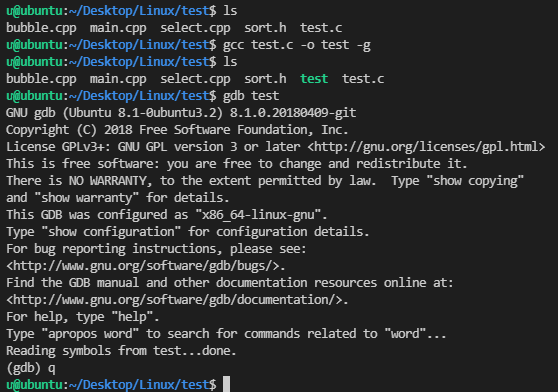
给程序设置参数/获取设置参数
- 设置参数：
set args 10 20 - 获取设置参数：
show args
// test.c 源码
#include <stdio.h>
#include <stdlib.h>
int test(int a);
int main(int argc, char* argv[]) {
int a, b;
printf("argc = %d\n", argc);
if(argc < 3) {
a = 10;
b = 30;
} else {
a = atoi(argv[1]);
b = atoi(argv[2]);
}
printf("a = %d, b = %d\n", a, b);
printf("a + b = %d\n", a + b);
for(int i = 0; i < a; ++i) {
printf("i = %d\n", i);
// 函数调用
int res = test(i);
printf("res value: %d\n", res);
}
printf("THE END !!!\n");
return 0;
}
int test(int a) {
int num = 0;
for(int i = 0; i < a; ++i) {
num += i;
}
return num;
}
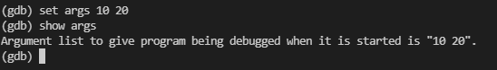
GDB使用帮助
help
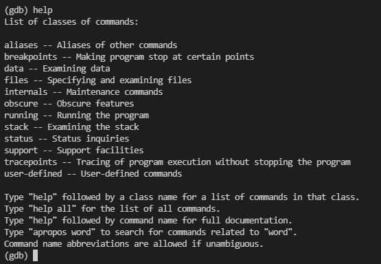
查看当前文件代码
- 从默认位置显示：
list/l
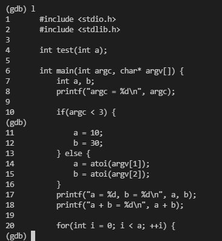
- 从指定的行显示：
list/l 行号
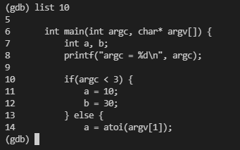
- 从指定的函数显示：
list/l 行号
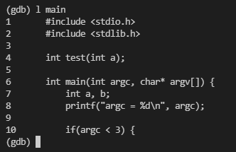
- 注：查看时会显示前后文
查看非当前文件代码
- 编译运行并使用
gdb main
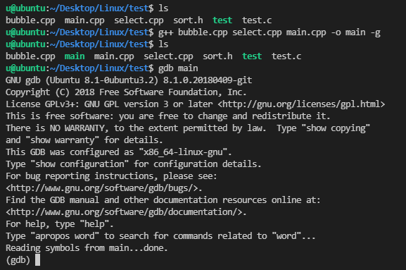
- 从指定文件指定的行显示：
list/l 文件名:行号
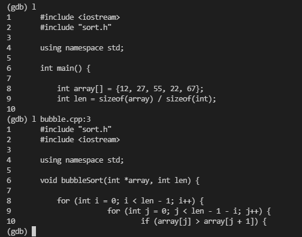
- 从指定文件指定的函数显示：
list/l 文件名:函数名
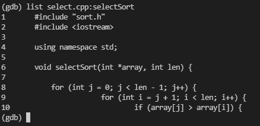
查看及设置显示的行数
- 查看显示的行数：
show list/listsize - 设置显示的行数：
set list/listsize
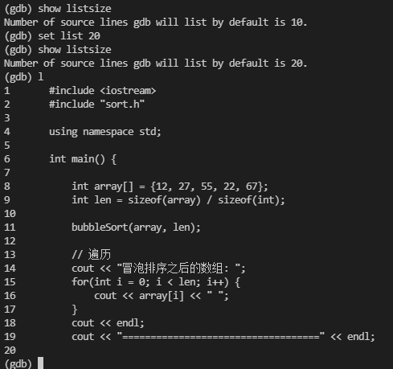
断点操作
-
查看断点：
i/info b/break -
设置一般断点
b/break 行号b/break 函数名b/break 文件名:行号b/break 文件名:函数- 设置条件断点（一般用在循环的位置）：
b/break 10 if i==5
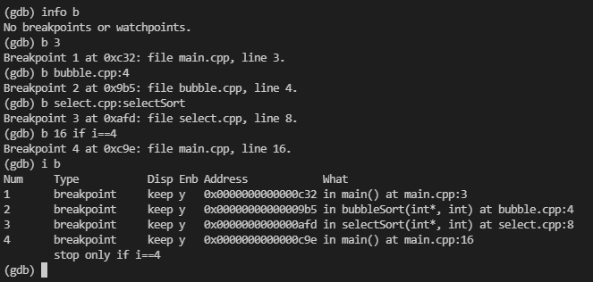
- 删除断点：
d/del/delete 断点编号 - 设置断点无效：
dis/disable 断点编号 - 设置断点生效：
ena/enable 断点编号
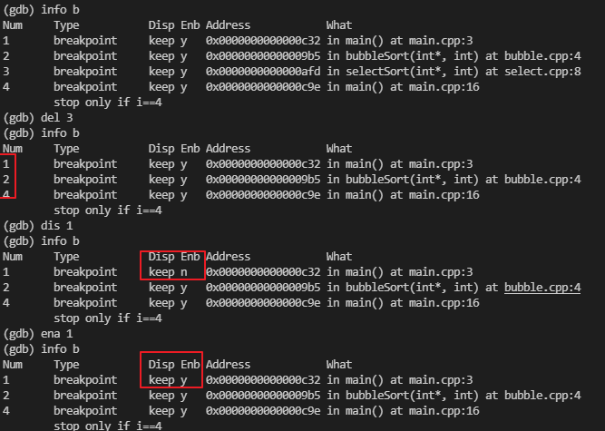
调试操作
- 运行
GDB程序 - 程序停在第一行：
start - 遇到断点才停：
run - 继续运行，到下一个断点停：
c/continue - 向下执行一行代码（不会进入函数体）：
n/next - 变量操作
- 打印变量值：
p/print 变量名 - 打印变量类型：
ptype 变量名 - 向下单步调试（遇到函数进入函数体）
s/step- 跳出函数体：
finish - 自动变量操作
- 自动打印指定变量的值：
display 变量名 - 查看自动变量：
i/info display - 取消自动变量：
undisplay 编号 - 其它操作
- 设置变量值：
set var 变量名=变量值 （循环中用的较多） - 跳出循环：
until
文件IO
说明
-
本部分笔记及源码出自
slide/01Linux系统编程入门/05 文件IO -
在
Linux中使用man 2 API名查看Linux系统API，man 3 API名查看标准C库API -
man 2 open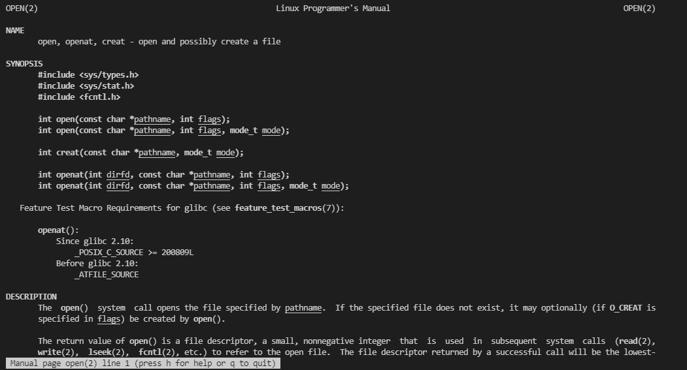
-
man 3 fopen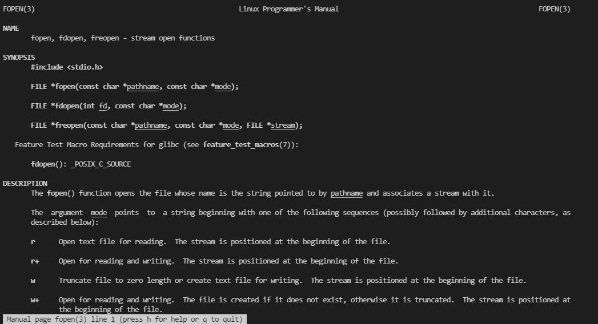
标准 C 库 IO 函数
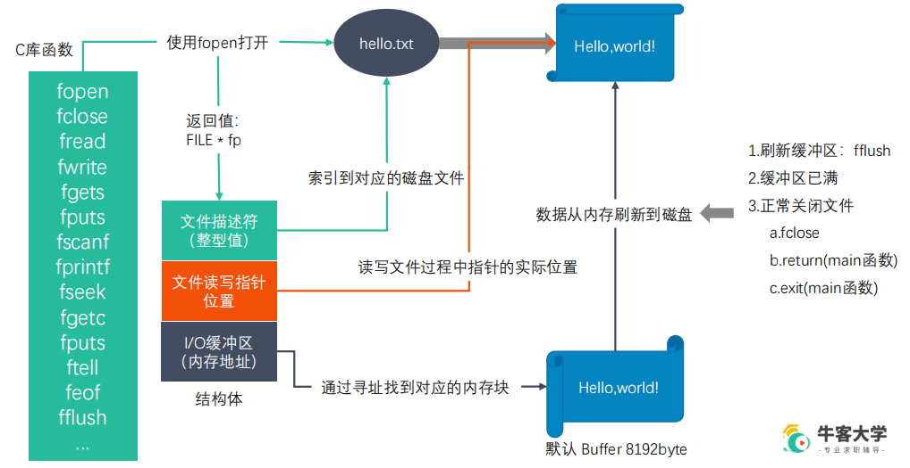
标准 C 库 IO 和 Linux 系统 IO 的关系
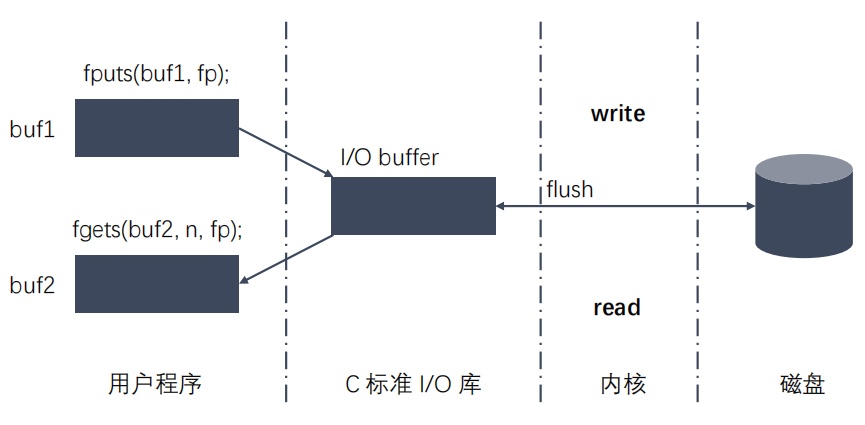
虚拟地址空间
- 虚拟地址空间是为了解决内存加载问题
- 问题1：假设实际内存为
4G，此时共有1G、2G、2G三个程序，如果直接加载，那么第三个程序由于内存不足而无法执行 -
问题2：当问题1的
1G程序执行完后，释放内存，第三个程序可以执行，但此时内存空间不连续 -
对于32位机器来说，大小约为$2^{32}$，即
4G左右，对于64位机器来说，，大小约为$2^{48}$，即256T左右 - 通过
CPU中的MMU(内存管理单元)将虚拟内存地址映射到物理内存地址上
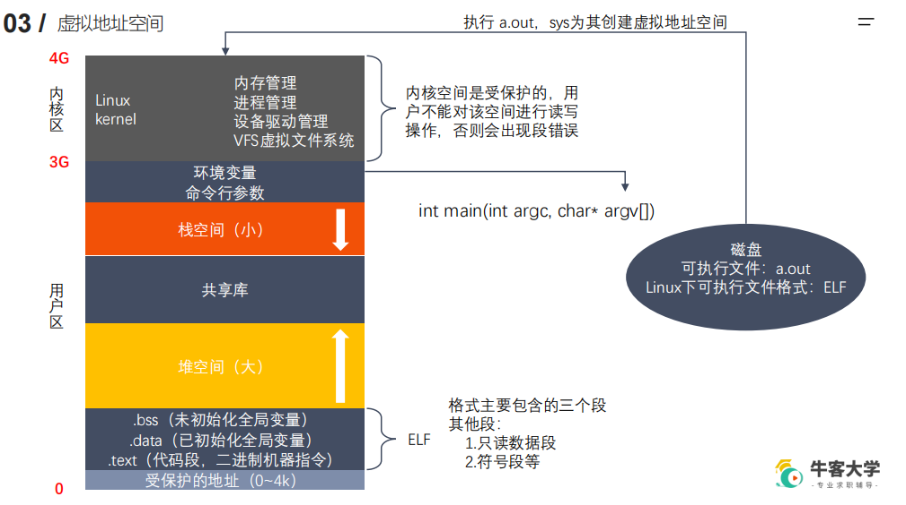
文件描述符
- 文件描述符表是一个数组，为了一个进程能够同时操作多个文件
- 文件描述符表默认大小：1024
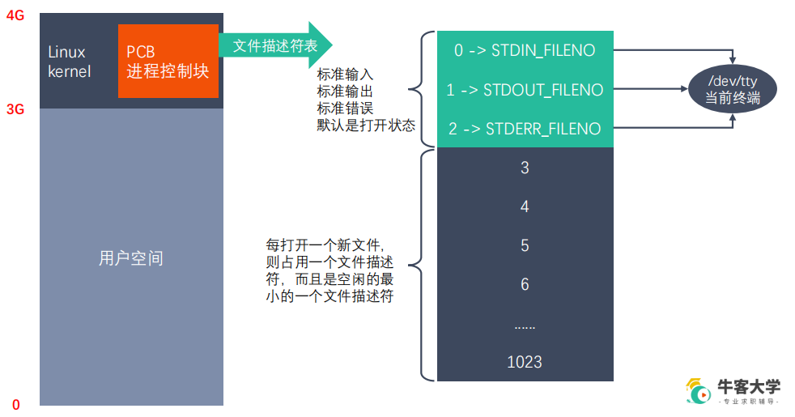
Linux 系统 IO 函数
open & close
-
int open(const char *pathname, int flags);，使用man 2 open查看帮助 -
参数
pathname：要打开的文件路径flags：对文件的操作权限设置还有其他的设置(O_RDONLY,O_WRONLY,O_RDWR这三个设置是互斥的，代表只读，只写，可读可写)
- 返回值：返回一个新的文件描述符，如果调用失败，返回-1，并设置
errno，errno属于Linux系统函数库里面的一个全局变量，记录的是最近的错误号
```c
/
#include
#include
int main() { // 打开一个文件 int fd = open("a.txt", O_RDONLY);
if(fd == -1) {
perror("open");
}
// 读写操作
// 关闭
close(fd);
return 0;
} ```
-
int open(const char *pathname, int flags, mode_t mode);，使用man 2 open查看帮助 -
参数
pathname：要创建的文件的路径flags：对文件的操作权限和其他的设置- 必选项：
O_RDONLY,O_WRONLY,O_RDWR这三个之间是互斥的 - 可选项：
O_CREAT文件不存在，创建新文件 flags参数是一个int类型的数据，占4个字节，32位，每一位就是一个标志位，所以用|可以保证能够实现多个操作mode：八进制的数，表示创建出的新的文件的操作权限，比如：0775
```c
/
最终的权限是：mode & ~umask
0777 -> 111111111
& 0775 -> 111111101
----------------------------
111111101
按位与：0和任何数都为0
umask的作用就是抹去某些权限, 可以直接在终端输入 umask 查看默认值
/
#include
int main() { // 创建一个新的文件 int fd = open("create.txt", O_RDWR | O_CREAT, 0777);
if(fd == -1) {
perror("open");
}
// 关闭
close(fd);
return 0;
} ```
int close(int fd);
read & write
ssize_t read(int fd, void *buf, size_t count);，使用man 2 read查看帮助- 参数
fd：文件描述符，open得到的，通过这个文件描述符操作某个文件buf：需要读取数据存放的地方，数组的地址（传出参数）count：指定的数组的大小
- 返回值
- 成功
> 0: 返回实际的读取到的字节数= 0：文件已经读取完了- 失败：-1
ssize_t write(int fd, const void *buf, size_t count);，使用man 2 write查看帮助- 参数
fd：文件描述符，open得到的，通过这个文件描述符操作某个文件buf：要往磁盘写入的数据count：要写的数据的实际的大小
- 返回值
- 成功：实际写入的字节数
- 失败：返回-1，并设置
errno
#include <unistd.h>
#include <stdio.h>
#include <sys/types.h>
#include <sys/stat.h>
#include <fcntl.h>
int main()
{
// 1.通过open打开english.txt文件
int srcfd = open("english.txt", O_RDONLY);
if(srcfd == -1) {
perror("open");
return -1;
}
// 2.创建一个新的文件（拷贝文件）
int destfd = open("cpy.txt", O_WRONLY | O_CREAT, 0664);
if(destfd == -1) {
perror("open");
return -1;
}
// 3.频繁的读写操作
char buf[1024] = {0};
int len = 0;
while((len = read(srcfd, buf, sizeof(buf))) > 0) {
write(destfd, buf, len);
}
// 4.关闭文件
close(destfd);
close(srcfd);
return 0;
}
lseek
off_t lseek(int fd, off_t offset, int whence);，使用man 2 lseek查看帮助
/*
标准C库的函数
#include <stdio.h>
int fseek(FILE *stream, long offset, int whence);
Linux系统函数
#include <sys/types.h>
#include <unistd.h>
off_t lseek(int fd, off_t offset, int whence);
参数：
- fd：文件描述符，通过open得到的，通过这个fd操作某个文件
- offset：偏移量
- whence:
SEEK_SET
设置文件指针的偏移量
SEEK_CUR
设置偏移量：当前位置 + 第二个参数offset的值
SEEK_END
设置偏移量：文件大小 + 第二个参数offset的值
返回值：返回文件指针的位置
作用：
1.移动文件指针到文件头
lseek(fd, 0, SEEK_SET);
2.获取当前文件指针的位置
lseek(fd, 0, SEEK_CUR);
3.获取文件长度
lseek(fd, 0, SEEK_END);
4.拓展文件的长度，当前文件10b, 110b, 增加了100个字节
lseek(fd, 100, SEEK_END)
注意：需要写一次数据
*/
#include <sys/types.h>
#include <sys/stat.h>
#include <fcntl.h>
#include <unistd.h>
#include <stdio.h>
int main()
{
int fd = open("hello.txt", O_RDWR);
if(fd == -1) {
perror("open");
return -1;
}
// 扩展文件的长度
int ret = lseek(fd, 100, SEEK_END);
if(ret == -1) {
perror("lseek");
return -1;
}
// 写入一个空数据，如果缺少，那么会扩展失败
write(fd, " ", 1);
// 关闭文件
close(fd);
return 0;
}
- 扩展前
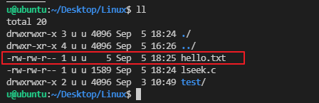
- 扩展后（原先为5个字节，扩展100个字节，然后写入一个字节）
stat & lstat(获取文件信息及软链接信息)
-
int stat(const char *pathname, struct stat *statbuf);，使用man 2 stat查看帮助 -
int lstat(const char *pathname, struct stat *statbuf);，使用man 2 lstat查看帮助 -
Linux命令：
stat
stat结构体
c
struct stat {
dev_t st_dev; // 文件的设备编号
ino_t st_ino; // 节点
mode_t st_mode; // 文件的类型和存取的权限
nlink_t st_nlink; // 连到该文件的硬连接数目
uid_t st_uid; // 用户ID
gid_t st_gid; // 组ID
dev_t st_rdev; // 设备文件的设备编号
off_t st_size; // 文件字节数(文件大小)
blksize_t st_blksize; // 块大小
blkcnt_t st_blocks; // 块数
time_t st_atime; // 最后一次访问时间
time_t st_mtime; // 最后一次修改时间
time_t st_ctime; // 最后一次改变时间(指属性)
};
-
st_mode
/*
#include <sys/types.h>
#include <sys/stat.h>
#include <unistd.h>
int stat(const char *pathname, struct stat *statbuf);
作用：获取一个文件相关的一些信息
参数:
- pathname：操作的文件的路径
- statbuf：结构体变量，传出参数，用于保存获取到的文件的信息
返回值：
成功：返回0
失败：返回-1 设置errno
int lstat(const char *pathname, struct stat *statbuf);
参数:
- pathname：操作的文件的路径
- statbuf：结构体变量，传出参数，用于保存获取到的文件的信息
返回值：
成功：返回0
失败：返回-1 设置errno
*/
#include <sys/types.h>
#include <sys/stat.h>
#include <unistd.h>
#include <stdio.h>
int main()
{
struct stat statbuf;
int ret = stat("a.txt", &statbuf);
if(ret == -1) {
perror("stat");
return -1;
}
printf("size: %ld\n", statbuf.st_size);
return 0;
}
模拟实现ls -l
#include <stdio.h>
#include <sys/types.h>
#include <sys/stat.h>
#include <unistd.h>
#include <pwd.h> // for getpwuid()
#include <grp.h> // for getgrgid()
#include <time.h> // for ctime()
#include <string.h> // for strncpy(), strlen()
// 模拟实现 ls -l 指令
// -rw-rw-r-- 1 nowcoder nowcoder 12 12月 3 15:48 a.txt
int main(int argc, char * argv[])
{
// 判断输入的参数是否正确
if(argc < 2) {
printf("%s filename\n", argv[0]);
return -1;
}
// 通过stat函数获取用户传入的文件的信息
struct stat st;
int ret = stat(argv[1], &st);
if(ret == -1) {
perror("stat");
return -1;
}
// 获取文件类型和文件权限
char perms[11] = {0}; // 用于保存文件类型和文件权限的字符串
switch(st.st_mode & S_IFMT) {
case S_IFLNK:
perms[0] = 'l';
break;
case S_IFDIR:
perms[0] = 'd';
break;
case S_IFREG:
perms[0] = '-';
break;
case S_IFBLK:
perms[0] = 'b';
break;
case S_IFCHR:
perms[0] = 'c';
break;
case S_IFSOCK:
perms[0] = 's';
break;
case S_IFIFO:
perms[0] = 'p';
break;
default:
perms[0] = '?';
break;
}
// 判断文件的访问权限
// 文件所有者
perms[1] = (st.st_mode & S_IRUSR) ? 'r' : '-';
perms[2] = (st.st_mode & S_IWUSR) ? 'w' : '-';
perms[3] = (st.st_mode & S_IXUSR) ? 'x' : '-';
// 文件所在组
perms[4] = (st.st_mode & S_IRGRP) ? 'r' : '-';
perms[5] = (st.st_mode & S_IWGRP) ? 'w' : '-';
perms[6] = (st.st_mode & S_IXGRP) ? 'x' : '-';
// 其他人
perms[7] = (st.st_mode & S_IROTH) ? 'r' : '-';
perms[8] = (st.st_mode & S_IWOTH) ? 'w' : '-';
perms[9] = (st.st_mode & S_IXOTH) ? 'x' : '-';
// 硬连接数
int linkNum = st.st_nlink;
// 文件所有者
char* fileUser = getpwuid(st.st_uid)->pw_name;
// 文件所在组
char* fileGrp = getgrgid(st.st_gid)->gr_name;
// 文件大小
long int fileSize = st.st_size;
// 获取修改的时间
char* time = ctime(&st.st_mtime);
char mtime[512] = {0};
strncpy(mtime, time, strlen(time) - 1);
char buf[1024];
sprintf(buf, "%s %d %s %s %ld %s %s", perms, linkNum, fileUser, fileGrp, fileSize, mtime, argv[1]);
printf("%s\n", buf);
return 0;
}
文件属性操作函数
access
int access(const char *pathname, int mode);
/*
#include <unistd.h>
int access(const char *pathname, int mode);
作用：判断某个文件是否有某个权限，或者判断文件是否存在
参数：
- pathname: 判断的文件路径
- mode:
R_OK: 判断是否有读权限
W_OK: 判断是否有写权限
X_OK: 判断是否有执行权限
F_OK: 判断文件是否存在
返回值：成功返回0， 失败返回-1
*/
#include <unistd.h>
#include <stdio.h>
int main()
{
int ret = access("a.txt", F_OK);
if(ret == -1) {
perror("access");
}
printf("文件存在！！!\n");
return 0;
}
chmod & chown
int chmod(const char *filename, int mode);
/*
#include <sys/stat.h>
int chmod(const char *pathname, mode_t mode);
修改文件的权限
参数：
- pathname: 需要修改的文件的路径
- mode:需要修改的权限值，八进制的数
返回值：成功返回0，失败返回-1
*/
#include <sys/stat.h>
#include <stdio.h>
int main()
{
int ret = chmod("a.txt", 0777);
if(ret == -1) {
perror("chmod");
return -1;
}
return 0;
}
int chown(const char *path, uid_t owner, gid_t group);- 修改文件所有者
- 可使用
vim /etc/passwd查看有哪些用户 - 可使用
vim /etc/group查看有哪些组
truncate
int truncate(const char *path, off_t length);
/*
#include <unistd.h>
#include <sys/types.h>
int truncate(const char *path, off_t length);
作用：缩减或者扩展文件的尺寸至指定的大小
参数：
- path: 需要修改的文件的路径
- length: 需要最终文件变成的大小
返回值：
成功返回0， 失败返回-1
*/
#include <unistd.h>
#include <sys/types.h>
#include <stdio.h>
int main()
{
int ret = truncate("b.txt", 5);
if(ret == -1) {
perror("truncate");
return -1;
}
return 0;
}
目录操作函数
mkdir
int mkdir(const char *pathname, mode_t mode);
/*
#include <sys/stat.h>
#include <sys/types.h>
int mkdir(const char *pathname, mode_t mode);
作用：创建一个目录
参数：
pathname: 创建的目录的路径
mode: 权限，八进制的数
返回值：
成功返回0， 失败返回-1
*/
#include <sys/stat.h>
#include <sys/types.h>
#include <stdio.h>
int main()
{
int ret = mkdir("aaa", 0777);
if(ret == -1) {
perror("mkdir");
return -1;
}
return 0;
}
rename
int rename(const char *oldpath, const char *newpath);
/*
#include <stdio.h>
int rename(const char *oldpath, const char *newpath);
*/
#include <stdio.h>
int main()
{
int ret = rename("aaa", "bbb");
if(ret == -1) {
perror("rename");
return -1;
}
return 0;
}
chdir & getcwd
-
int chdir(const char *path); -
char *getcwd(char *buf, size_t size);
/*
#include <unistd.h>
int chdir(const char *path);
作用：修改进程的工作目录
比如在/home/nowcoder 启动了一个可执行程序a.out, 进程的工作目录 /home/nowcoder
参数：
path : 需要修改的工作目录
#include <unistd.h>
char *getcwd(char *buf, size_t size);
作用：获取当前工作目录
参数：
- buf : 存储的路径，指向的是一个数组（传出参数）
- size: 数组的大小
返回值：
返回的指向的一块内存，这个数据就是第一个参数
*/
#include <unistd.h>
#include <stdio.h>
#include <sys/stat.h>
#include <sys/types.h>
#include <fcntl.h>
int main()
{
// 获取当前的工作目录
char buf[128];
getcwd(buf, sizeof(buf));
printf("当前的工作目录是：%s\n", buf);
// 修改工作目录
int ret = chdir("/home/u/Desktop/Linux/test");
if(ret == -1) {
perror("chdir");
return -1;
}
// 创建一个新的文件
int fd = open("chdir.txt", O_CREAT | O_RDWR, 0664);
if(fd == -1) {
perror("open");
return -1;
}
close(fd);
// 获取当前的工作目录
char buf1[128];
getcwd(buf1, sizeof(buf1));
printf("当前的工作目录是：%s\n", buf1);
return 0;
}
目录遍历函数
-
打开一个目录：
DIR *opendir(const char *name); -
读取目录中的数据：
struct dirent *readdir(DIR *dirp); -
关闭目录：
int closedir(DIR *dirp); -
dirent结构体和d_type
c
struct dirent
{
// 此目录进入点的inode
ino_t d_ino;
// 目录文件开头至此目录进入点的位移
off_t d_off;
// d_name 的长度, 不包含NULL字符
unsigned short int d_reclen;
// d_name 所指的文件类型
unsigned char d_type;
// 文件名
char d_name[256];
};
-
d_type -
读取文件夹文件数目实例
```c
/
// 打开一个目录
#include
// 读取目录中的数据
#include <dirent.h>
struct dirent *readdir(DIR *dirp);
- 参数：dirp是opendir返回的结果
- 返回值：
struct dirent，代表读取到的文件的信息
读取到了末尾或者失败了，返回NULL
// 关闭目录
#include <sys/types.h>
#include <dirent.h>
int closedir(DIR *dirp);
*/
#include
int getFileNum(const char * path);
// 读取某个目录下所有的普通文件的个数 int main(int argc, char * argv[]) { if(argc < 2) { printf("%s path\n", argv[0]); return -1; }
int num = getFileNum(argv[1]);
printf("普通文件的个数为：%d\n", num);
return 0;
}
// 用于获取目录下所有普通文件的个数 int getFileNum(const char * path) {
// 1.打开目录
DIR * dir = opendir(path);
if(dir == NULL) {
perror("opendir");
exit(0);
}
struct dirent *ptr;
// 记录普通文件的个数
int total = 0;
while((ptr = readdir(dir)) != NULL) {
// 获取名称
char * dname = ptr->d_name;
// 忽略掉. 和..
if(strcmp(dname, ".") == 0 || strcmp(dname, "..") == 0) {
continue;
}
// 判断是否是普通文件还是目录
if(ptr->d_type == DT_DIR) {
// 目录,需要继续读取这个目录
char newpath[256];
sprintf(newpath, "%s/%s", path, dname);
total += getFileNum(newpath);
}
if(ptr->d_type == DT_REG) {
// 普通文件
total++;
}
}
// 关闭目录
closedir(dir);
return total;
} ```
文件描述符之dup、dup2
dup
int dup(int oldfd);- 复制文件描述符
/*
#include <unistd.h>
int dup(int oldfd);
作用：复制一个新的文件描述符
fd=3, int fd1 = dup(fd),
fd指向的是a.txt, fd1也是指向a.txt
从空闲的文件描述符表中找一个最小的，作为新的拷贝的文件描述符
*/
#include <unistd.h>
#include <stdio.h>
#include <fcntl.h>
#include <sys/types.h>
#include <sys/stat.h>
#include <string.h>
int main()
{
int fd = open("a.txt", O_RDWR | O_CREAT, 0664);
int fd1 = dup(fd);
if(fd1 == -1) {
perror("dup");
return -1;
}
printf("fd : %d , fd1 : %d\n", fd, fd1);
close(fd);
char * str = "hello,world";
int ret = write(fd1, str, strlen(str));
if(ret == -1) {
perror("write");
return -1;
}
close(fd1);
return 0;
}
dup2
int dup2(int oldfd, int newfd);- 重定向文件描述符
/*
#include <unistd.h>
int dup2(int oldfd, int newfd);
作用：重定向文件描述符
oldfd 指向 a.txt, newfd 指向 b.txt
调用函数成功后：newfd 和 b.txt 做close, newfd 指向了 a.txt
oldfd 必须是一个有效的文件描述符
oldfd和newfd值相同，相当于什么都没有做
*/
#include <unistd.h>
#include <stdio.h>
#include <string.h>
#include <sys/stat.h>
#include <sys/types.h>
#include <fcntl.h>
int main()
{
int fd = open("1.txt", O_RDWR | O_CREAT, 0664);
if(fd == -1) {
perror("open");
return -1;
}
int fd1 = open("2.txt", O_RDWR | O_CREAT, 0664);
if(fd1 == -1) {
perror("open");
return -1;
}
printf("fd : %d, fd1 : %d\n", fd, fd1);
int fd2 = dup2(fd, fd1);
if(fd2 == -1) {
perror("dup2");
return -1;
}
// 通过fd1去写数据，实际操作的是1.txt，而不是2.txt
char * str = "hello, dup2";
int len = write(fd1, str, strlen(str));
if(len == -1) {
perror("write");
return -1;
}
printf("fd : %d, fd1 : %d, fd2 : %d\n", fd, fd1, fd2);
close(fd);
close(fd1);
return 0;
}
fcntl 函数
int fcntl(int fd, int cmd, ... /* arg */ );- 复制文件描述符和设置/获取文件的状态标志
/*
#include <unistd.h>
#include <fcntl.h>
int fcntl(int fd, int cmd, ...);
参数：
fd : 表示需要操作的文件描述符
cmd: 表示对文件描述符进行如何操作
- F_DUPFD : 复制文件描述符,复制的是第一个参数fd，得到一个新的文件描述符（返回值）
int ret = fcntl(fd, F_DUPFD);
- F_GETFL : 获取指定的文件描述符文件状态flag
获取的flag和我们通过open函数传递的flag是一个东西。
- F_SETFL : 设置文件描述符文件状态flag
必选项：O_RDONLY, O_WRONLY, O_RDWR 不可以被修改
可选性：O_APPEND, O_NONBLOCK
O_APPEND 表示追加数据
NONBLOK 设置成非阻塞
阻塞和非阻塞：描述的是函数调用的行为。
*/
#include <unistd.h>
#include <fcntl.h>
#include <stdio.h>
#include <string.h>
int main()
{
// 1.复制文件描述符
// int fd = open("1.txt", O_RDONLY);
// int ret = fcntl(fd, F_DUPFD);
// 2.修改或者获取文件状态flag
int fd = open("1.txt", O_RDWR);
if(fd == -1) {
perror("open");
return -1;
}
// 获取文件描述符状态flag
int flag = fcntl(fd, F_GETFL);
if(flag == -1) {
perror("fcntl");
return -1;
}
flag |= O_APPEND; // flag = flag | O_APPEND
// 修改文件描述符状态的flag，给flag加入O_APPEND这个标记
int ret = fcntl(fd, F_SETFL, flag);
if(ret == -1) {
perror("fcntl");
return -1;
}
char * str = "nihao";
write(fd, str, strlen(str));
close(fd);
return 0;
}